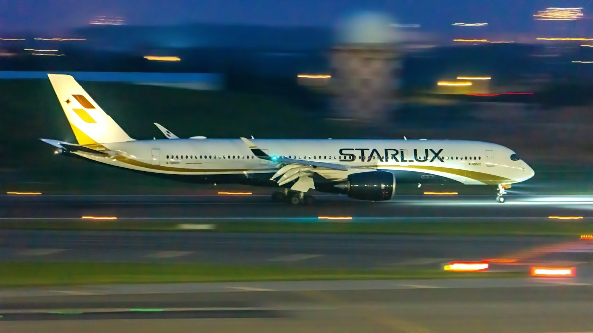

A350-900 (Starlux Airlines)
Region : Taiwan (ROC)
Spotted place : Taiwan Taoyuan International Airport (TPE/RCTP)
Gears : SONY NEX-6 ƒ/5.6 1/6 155 mm ISO 3200

A350-900 (China Airlines)
Region : Taiwan(ROC)
Spotted place : Taiwan Taoyuan International Airport (TPE/RCTP)
Gears : SONY NEX-6, ƒ/13 1/4000 210 mm ISO 800